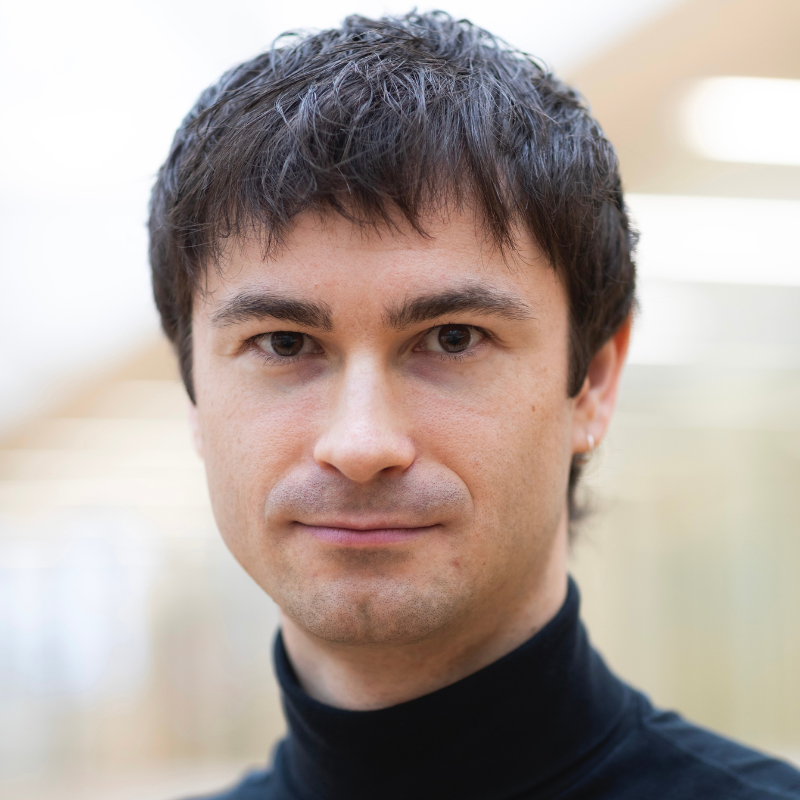
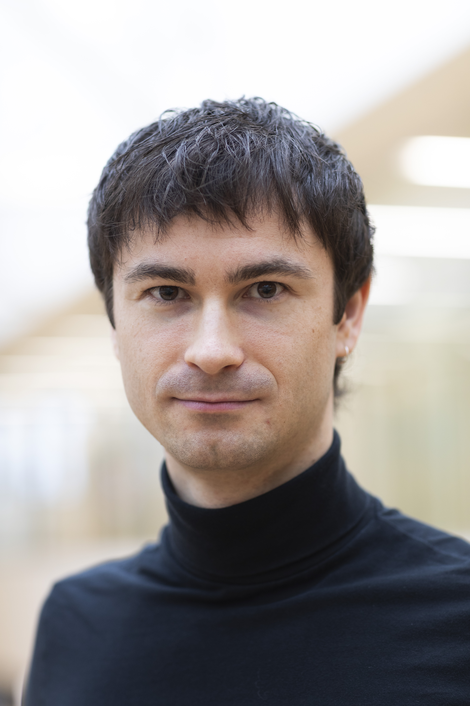

Born and raised in rural Ukraine, I grew up surrounded by cherry trees and a tight-knit community. Today, I’m based in Helsinki, pursuing a master’s degree in marketing at Aalto University. My path from a small village to one of Europe’s leading innovation hubs has been filled with diverse experiences: from volunteering in kindergartens and organising events to designing user interfaces and pitching at international competitions.
Along the way I’ve learned to bridge cultures and disciplines. I taught English and robotics to preschoolers in Estonia, built human-friendly cybersecurity tools, gamified elevator rides for KONE, and helped improve hearing health through storytelling. These experiences taught me empathy, adaptability and the power of simple narratives.
As a vegan and member of the LGBTQ+ community, I care deeply about inclusion and sustainability. I’m currently applying for Finnish citizenship and learning Finnish (slowly but surely). When I’m not studying, you’ll find me exploring Helsinki’s museums, hosting community events, or networking at events like Slush or Junction. I’m also learning to play the piano!

